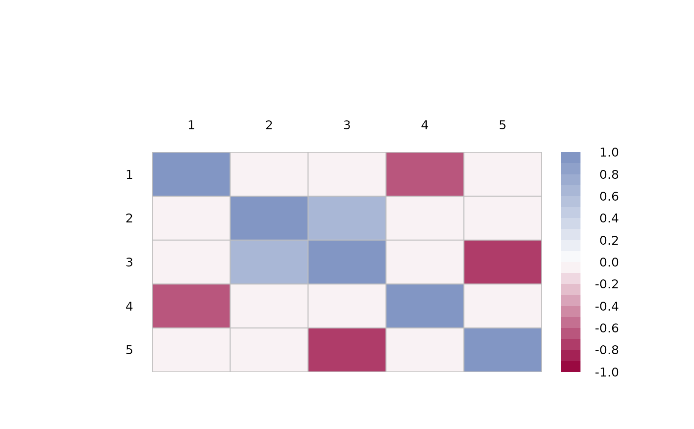

FindCorr.RdThis function searches through a correlation matrix and returns a vector of integers corresponding to columns to remove to reduce pair-wise correlations.
FindCorr(x, cutoff = .90, verbose = FALSE)The absolute values of pair-wise correlations are considered. If two variables have a high correlation, the function looks at the mean absolute correlation of each variable and removes the variable with the largest mean absolute correlation.
There are several function in the subselect package that can also be used to accomplish the same goal. However the package was removed from CRAN and available in the archives.
A vector of indices denoting the columns to remove. If no correlations meet the criteria, numeric(0) is returned.
Max Kuhn. Contributions from Jed Wing, Steve Weston, Andre Williams, Chris Keefer, Allan Engelhardt, Tony Cooper, Zachary Mayer and the R Core Team (2014). caret: Classification and Regression Training. R package version 6.0-35. https://cran.r-project.org/package=caret
corrMatrix <- diag(rep(1, 5))
corrMatrix[2, 3] <- corrMatrix[3, 2] <- .7
corrMatrix[5, 3] <- corrMatrix[3, 5] <- -.7
corrMatrix[4, 1] <- corrMatrix[1, 4] <- -.67
corrDF <- expand.grid(row = 1:5, col = 1:5)
corrDF$correlation <- as.vector(corrMatrix)
PlotCorr(xtabs(correlation ~ ., corrDF), las=1, border="grey")

FindCorr(corrMatrix, cutoff = .65, verbose = TRUE)
#> Considering row 3 column 2 value 0.7
#> Flagging column 3
#> Considering row 2 column 5 value 0
#> Considering row 2 column 1 value 0
#> Considering row 2 column 4 value 0
#> Considering row 5 column 1 value 0
#> Considering row 5 column 4 value 0
#> Considering row 1 column 4 value 0.67
#> Flagging column 4
#> [1] 3 4
FindCorr(corrMatrix, cutoff = .99, verbose = TRUE)
#> Considering row 3 column 2 value 0.7
#> Considering row 3 column 5 value 0.7
#> Considering row 3 column 1 value 0
#> Considering row 3 column 4 value 0
#> Considering row 2 column 5 value 0
#> Considering row 2 column 1 value 0
#> Considering row 2 column 4 value 0
#> Considering row 5 column 1 value 0
#> Considering row 5 column 4 value 0
#> Considering row 1 column 4 value 0.67
#> integer(0)
# d.pizza example
m <- cor(data.frame(lapply(d.pizza, as.numeric)), use="pairwise.complete.obs")
FindCorr(m, verbose = TRUE)
#> Considering row 8 column 3 value 0.018
#> Considering row 8 column 2 value 0.028
#> Considering row 8 column 1 value 0.03
#> Considering row 8 column 12 value 0.019
#> Considering row 8 column 16 value 0.076
#> Considering row 8 column 5 value 0.152
#> Considering row 8 column 11 value 0.095
#> Considering row 8 column 13 value 0.51
#> Considering row 8 column 14 value 0.478
#> Considering row 8 column 6 value 0.807
#> Considering row 8 column 7 value 0.543
#> Considering row 8 column 9 value 0.076
#> Considering row 8 column 4 value 0.042
#> Considering row 8 column 10 value 0.038
#> Considering row 8 column 15 value 0.033
#> Considering row 3 column 2 value 0.976
#> Flagging column 3
#> Considering row 2 column 1 value 0.999
#> Flagging column 2
#> Considering row 1 column 12 value 0.067
#> Considering row 1 column 16 value 0.072
#> Considering row 1 column 5 value 0.119
#> Considering row 1 column 11 value 0.056
#> Considering row 1 column 13 value 0.031
#> Considering row 1 column 14 value 0.017
#> Considering row 1 column 6 value 0.009
#> Considering row 1 column 7 value 0.01
#> Considering row 1 column 9 value 0.14
#> Considering row 1 column 4 value 0.038
#> Considering row 1 column 10 value 0.063
#> Considering row 1 column 15 value 0.015
#> Considering row 12 column 16 value 0.707
#> Considering row 12 column 5 value 0.292
#> Considering row 12 column 11 value 0.575
#> Considering row 12 column 13 value 0.05
#> Considering row 12 column 14 value 0.067
#> Considering row 12 column 6 value 0.043
#> Considering row 12 column 7 value 0.109
#> Considering row 12 column 9 value 0.072
#> Considering row 12 column 4 value 0.105
#> Considering row 12 column 10 value 0.003
#> Considering row 12 column 15 value 0.035
#> Considering row 16 column 5 value 0.227
#> Considering row 16 column 11 value 0.355
#> Considering row 16 column 13 value 0.077
#> Considering row 16 column 14 value 0.114
#> Considering row 16 column 6 value 0.008
#> Considering row 16 column 7 value 0.059
#> Considering row 16 column 9 value 0.248
#> Considering row 16 column 4 value 0.102
#> Considering row 16 column 10 value 0.045
#> Considering row 16 column 15 value 0.007
#> Considering row 5 column 11 value 0.478
#> Considering row 5 column 13 value 0.14
#> Considering row 5 column 14 value 0.12
#> Considering row 5 column 6 value 0.052
#> Considering row 5 column 7 value 0.013
#> Considering row 5 column 9 value 0.085
#> Considering row 5 column 4 value 0.111
#> Considering row 5 column 10 value 0.047
#> Considering row 5 column 15 value 0.01
#> Considering row 11 column 13 value 0.076
#> Considering row 11 column 14 value 0.082
#> Considering row 11 column 6 value 0.037
#> Considering row 11 column 7 value 0.014
#> Considering row 11 column 9 value 0.08
#> Considering row 11 column 4 value 0.046
#> Considering row 11 column 10 value 0.015
#> Considering row 11 column 15 value 0.011
#> Considering row 13 column 14 value 0.923
#> Flagging column 13
#> Considering row 14 column 6 value 0.013
#> Considering row 14 column 7 value 0.009
#> Considering row 14 column 9 value 0.042
#> Considering row 14 column 4 value 0.016
#> Considering row 14 column 10 value 0.022
#> Considering row 14 column 15 value 0.021
#> Considering row 6 column 7 value 0.744
#> Considering row 6 column 9 value 0.037
#> Considering row 6 column 4 value 0.023
#> Considering row 6 column 10 value 0.006
#> Considering row 6 column 15 value 0.041
#> Considering row 7 column 9 value 0.034
#> Considering row 7 column 4 value 0.139
#> Considering row 7 column 10 value 0.032
#> Considering row 7 column 15 value 0.006
#> Considering row 9 column 4 value 0.252
#> Considering row 9 column 10 value 0.168
#> Considering row 9 column 15 value 0.005
#> Considering row 4 column 10 value 0.127
#> Considering row 4 column 15 value 0.011
#> Considering row 10 column 15 value 0.012
#> [1] 3 2 13
m[, FindCorr(m)]
#> week date wine_ordered
#> index 0.974192573 0.999028828 0.030600322
#> date 0.976198358 1.000000000 0.036036580
#> week 1.000000000 0.976198358 0.032014141
#> weekday -0.258535360 -0.042875700 0.013005712
#> area 0.091975225 0.120181706 0.140393613
#> count 0.010740354 0.005943085 -0.022125402
#> rabate 0.020039206 -0.010547837 0.013302530
#> price 0.018137168 0.028162980 0.509676944
#> operator 0.070854797 0.129699307 0.038239080
#> driver -0.037057460 -0.066844465 -0.003367271
#> delivery_min 0.054344284 0.066614544 0.076473132
#> temperature 0.088823380 0.068222467 -0.049858606
#> wine_ordered 0.032014141 0.036036580 1.000000000
#> wine_delivered 0.016697141 0.020756359 0.922727399
#> wrongpizza 0.005659736 0.008217897 0.001967424
#> quality 0.099462346 0.080014155 -0.076622011